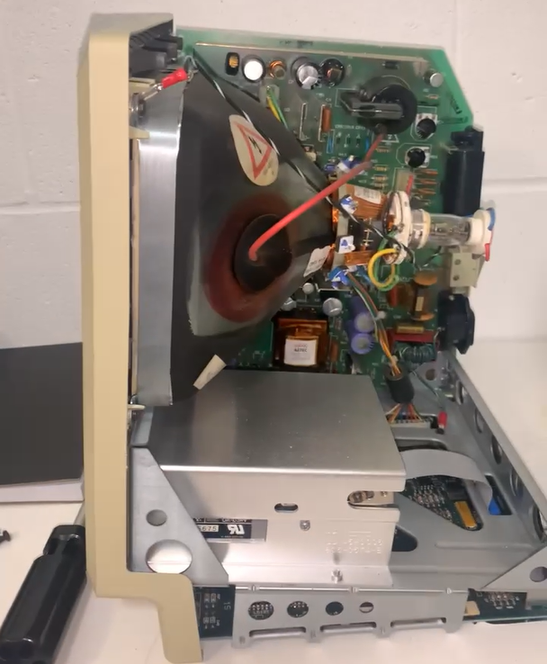

Floppy Disk Data Preservation
Recording history is a very important part of our existence. It gives us a warning of the future, and allows us to get unique prespective of our development as the centuries passed by. On a smaller scope, however, it allows us to clearly recall some of our favourite memories, and view our personal accomplishments as the years passed by. This unique ability is something that we should not take for granted, and I believe we should do our best to preserve every significant record, whether its an experience unique to one individual, or one shared by billions.

So when Dr. Brown asked me to help him revive old research data and papers from seemingly ancient technology - despite it being only 40 years since its first production - I was greatful for the opportunities presented to me. I got to learn the intricacies of a near-alien machine, and I learned of possible methods for preserving files stored on floppy disks.

Slowly learning about both the Mac128k and the Apple //e's software and hardware over the period of
approximately 10 months, I was able to overcome many obstacles that stood in my way, whether it be
technical repairs or unclear error messages. It was a fun and unique opportunity to expand my self-
teaching ability as well as learn something new old.

As a result of my work and research, alongside the resources given to me by Dr. Brown, I was able to find a possible method of extracting the files from DOS and ProDOS formatted floppy disks, then converting them to more modern file formats. This consequently spawned the idea of a "Data Detective" business, as well as an academic paper currently under development, which will include an in-depth methodology and an experimental evaluation, in order to solidify the methodology increase the amount of academic papers concerning the preservation of files from a constantly eroding storage medium - floppy disks. Our paper will also allow us to write similar papers specific to other computer systems that use floppy disks as a method of storage.